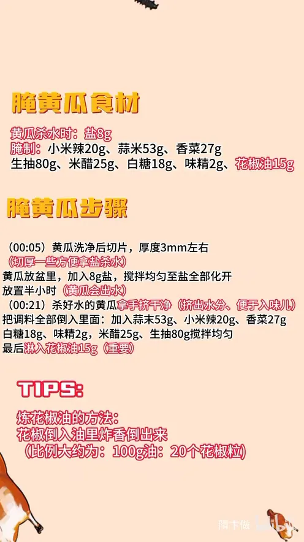

酸辣小黄瓜
隋卞一做。黄瓜切 3mm 厚片，先用 8g 盐杀水半小时、挤干便于入味；蒜米 53g、小米辣 20g 配生抽 80g、米醋 25g 拌腌，最后淋 15g 花椒油，脆爽解腻。
原视频：https://www.bilibili.com/video/BV1Zf421q7Cy
食材
黄瓜、盐 等 10 样
| 类别 | 用料 | 用量 |
|---|---|---|
| 主料 | 黄瓜 | 适量 |
| 黄瓜杀水 | 盐 | 8g |
| 腌制 | 蒜米（蒜末） | 53g |
| 腌制 | 小米辣 | 20g |
| 腌制 | 香菜 | 27g |
| 腌制 | 生抽 | 80g |
| 腌制 | 米醋 | 25g |
| 腌制 | 白糖 | 18g |
| 腌制 | 味精 | 2g |
| 腌制 | 花椒油 | 15g |
步骤
- 切片：黄瓜洗净后切片，厚度 3mm 左右，切厚一些方便用盐杀水。
- 杀水：黄瓜放盆里，加入 8g 盐，搅拌均匀至盐全部化开，放置半小时，黄瓜会出水。
- 挤水：杀好水的黄瓜用手挤干，挤出水分、便于入味儿。
- 拌调料：把调料全部倒入里面：加入蒜米 53g、小米辣 20g、香菜 27g、白糖 18g、味精 2g、米醋 25g、生抽 80g，搅拌均匀。
- 淋花椒油：最后淋入花椒油 15g，拌匀即可（这一步很重要）。
小贴士
- 炼花椒油的方法：花椒倒入油里炸香，倒出来用，比例大约是 100g 油配 20 个花椒粒。
- 黄瓜片别切太薄，3mm 左右厚片杀水后仍能保持脆口。
讲解要点
难度：★★☆☆☆（难点是盐量，盐少了不脆、盐多了发咸，杀水时间也要够）
为什么这么做
- 切 3mm 厚片：太薄一杀水就没口感，3mm 杀完还能保持脆；太厚又不容易腌透。
- 先放盐杀水半小时：盐把瓜里的水拔出来、纤维收缩，口感才爽脆；出的水挤掉，腌料的味道才进得去。
- 盐要拌到完全化开：盐没化到的地方杀水不均，有的脆有的软。
- 用手挤干水：水挤得越干，后面拌进去的汁越能吸进瓜肉，味道更足也更脆。
- 拌时边揉边摁：黄瓜像海绵，按压能把汁重新吸回去，不是只挂在表面。
- 最后淋花椒油：花椒油是这道菜的灵魂，最后淋才留得住香气；和别的调料一起早放，香味会被盖掉。
容易翻车
- 黄瓜切太薄，杀水后软塌塌，没口感。
- 盐放多或杀水太久，黄瓜发咸、发软。
- 水没挤干就拌，汁被稀释，味道淡还出水。
- 忘了最后淋花椒油，就只是普通拌黄瓜。
- 手上有小伤口时直接上手拌，盐和辣椒会蜇。
热评补充
- 不吃辣可以走糖腌版：黄瓜拍碎切丁，用平时 2-3 倍的白糖腌 20-30 分钟，把水倒掉，再加盐、鸡精、蚝油、蒜泥、少许花椒油和较多芝麻香油，不放酱油，黄瓜的清香保留得更好，也更脆嫩。
- 切小米辣后要洗手，尤其是别碰眼睛、如厕前；手上有伤口时别直接拌，盐和辣会疼。
原片尾卡

原片文案
AI 字幕校准稿
天气热了，很多人不想吃饭，教你们做一个又爽又脆的小黄瓜，绝对的超级下饭。黄瓜洗净之后切片，厚度 3mm。切好黄瓜之后直接放盐，用手搅拌一下，让盐充分化开。
搅拌匀之后，咱们放着它半小时。黄瓜在盐的作用下，慢慢慢慢会出水，出完水之后会变得爽脆，也更好地进味。然后拿手挤一下，放到另一个盘里边。
把这些调料依次全部放在里面：蒜、小米辣、香菜、糖、味精、酱油，来点醋。然后咱们直接开拌。边揉边拿手摁一下，它就像海绵一样，会把那汁重新再吸进去。
现在还只是普通的拌黄瓜，灵魂就要淋入一点花椒油。好了。
好脆呀，非常之好吃。这辣椒刺激，大蒜、香菜，辣椒完全已经浸到这个汤里面了，味道很香但是不刺激，它会伴着黄瓜的清香气一块涌上来。最灵魂的就是里面的那个花椒油，真的好香。这个可以现拌现吃，也可以留一部分放到冰箱随吃随取，真的超级下饭。
整理自「隋卞一做」系列视频，仅供个人学习。